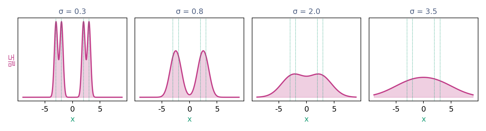
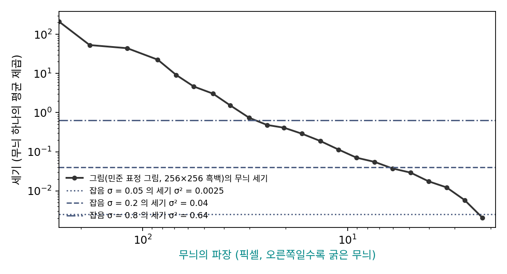

푸리에 성분: 촘촘한 무늬부터 사라진다
사진을 흐리게 하면 머리카락 같은 가는 결은 금세 사라지고 얼굴의 윤곽은 오래 남는다. 잡음을 섞어 가는 분포에서도 그럴까? 열 방정식은 분포 전체를 한꺼번에 고르게 만든다고만 말할 뿐, 어느 부분이 먼저 지워지는지는 바로 알려 주지 않는다. 처음 모양을 어떻게 나눠 보면 무엇이 먼저 사라지는지가 보일까?
쌍이 먼저 합쳐지고 무리는 나중에 합쳐진다
데이터를 −3, −2, 2, 3 네 점(각 1/4)으로 잡자. 간격 1인 가까운 쌍 두 개가 간격 5만큼 떨어진 두 무리를 이룬다. 가는 구조(쌍)와 굵은 구조(무리)를 한 데이터에 함께 담은 가장 작은 예라서 골랐다. 잡음을 섞어 가며 밀도를 그려 보면, 가까운 쌍이 먼저 봉우리 하나로 합쳐지고 두 무리는 한참 뒤까지 따로 남는다.

까닭은 분포를 물결무늬로 쪼개 보면 드러난다. 어떤 모양이든 촘촘함이 서로 다른 물결무늬(사인과 코사인)의 합으로 쓸 수 있다. 촘촘함은 길이 2π 안에 물결이 몇 번 들어가는지로 재고 파수 k라 부른다(파장이 λ이면 k = 2π/λ). 물결무늬 하나에 라플라시안을 쓰면 모양은 그대로이고 크기만 −k²배가 되므로, 열 방정식을 따라 무늬마다 모양을 지킨 채 크기만 줄어든다.
분포를 이렇게 물결무늬로 쪼갠 조각 하나하나를 푸리에 성분 (분포나 그림을 촘촘함이 다른 물결무늬로 쪼갠 조각 / Fourier component)이라 한다. 줄어드는 배율의 지수에 k²가 들어 있다는 점이 핵심이다. D = 4에서 파장 5인 무늬는 t = 0.01에 0.939배, t = 0.05에 0.729배로 천천히 줄지만, 파장 1인 무늬는 같은 시간에 0.206배, 0.0004배로 거의 사라진다. 파장이 5분의 1이면 k²는 25배라, 같은 만큼 줄어드는 데 걸리는 시간은 25분의 1이다. 순방향 과정은 촘촘한 무늬부터 지우고 굵은 무늬를 가장 오래 남긴다. 거꾸로 걷는 생성은 순서도 거꾸로라, 마지막까지 남은 굵은 무늬부터 되살리고 가장 먼저 사라진 가는 무늬를 맨 나중에 채운다.
ML에서: 잡음은 가는 무늬부터 덮는다
이번에는 그림 한 장 안을 보자. 그림에 잡음을 더하는 것은 블러가 아니라서 그림 안의 무늬를 줄이지 않는다. 대신 잡음이 새 무늬를 덧씌운다. 픽셀마다 따로 뽑은 잡음은 굵은 무늬와 가는 무늬를 똑같은 세기 σ²로 담고 있다. 그런데 사진이나 그림은 굵은 무늬가 세고 가는 무늬로 갈수록 세기가 가파르게 약해진다. 그래서 잡음을 키우면 그림의 가는 무늬가 먼저 잡음에 묻히고, 굵은 무늬는 더 큰 잡음까지 버틴다. 그림 한 장에 대해 무늬의 파장마다 세기를 재어 보면 이것이 보인다.

분포가 퍼지며 가는 구조부터 합쳐지는 것과, 그림 한 장에서 가는 무늬부터 잡음에 묻히는 것은 서로 다른 공간의 이야기지만 같은 순서를 낳는다. 그래서 디퓨전 모델은 잡음이 짙은 처음 걸음들에서 구도와 큰 덩어리를 정하고, 잡음이 옅어진 마지막 걸음들에서 머리카락과 결을 그린다.
문제 7. 흐린 시력검사표
시력검사표를 찍은 사진에 표준편차 2픽셀인 블러가 걸렸다. 이 블러는 파장 λ픽셀인 줄무늬의 크기를 e^(−(블러 표준편차)² × k²/2)배로 줄인다(k = 2π/λ). 큰 글자의 획은 16픽셀 간격으로, 작은 글자의 획은 4픽셀 간격으로 되풀이된다. (가) 두 글자의 획 무늬는 각각 몇 배가 되는가? (나) 큰 글자의 획도 작은 글자만큼 흐려지려면 블러의 표준편차가 몇 픽셀이어야 하는가?

작은 글자가 네 배 작으니까 네 배쯤 더 흐려지겠죠.

계산해서 견줘 봐요.

큰 글자는 k = 2π/16 = 0.393이라 e^(−2 × 0.154) = 0.735배, 작은 글자는 k = 1.571이라 e^(−4.93) = 0.0072배예요. 네 배가 아니라 백 배 넘게 차이 나요.

지수 안에 k²가 들어 있으니까 파장이 4분의 1이면 지수가 16배야. 지수가 16배면 배율은 0.735의 16제곱, 0.0072가 되지.

(나)는요?

배율은 (블러 표준편차 × k)만 보고 정해져요. 큰 글자의 k는 작은 글자의 4분의 1이니까 블러를 네 배, 8픽셀로 키우면 똑같이 0.0072배가 돼요. 무늬의 촘촘함과 블러의 폭은 서로 맞바꿀 수 있는 거네요.

시력검사 때 멀리서 보면 작은 글자가 먼저 안 보이고, 큰 글자는 꽤 흐려져도 읽히는 거랑 같아요.
문제 8. 네 점이 둘이 되고 하나가 될 때
데이터가 −3, −2, 2, 3 네 점(각 1/4)이고 σt² = 2Dt(D = 4)로 잡음을 섞는다. (가) 봉우리가 넷에서 둘로 줄어드는 σt와 t, 둘에서 하나로 줄어드는 σt와 t를 수치로 찾아라. (나) 두 t의 비는 얼마이고, 데이터의 어떤 길이의 비와 맞는가? (풀어 본 뒤 위젯 1의 「문제 8 불러오기」로 시작해 σ를 움직이며 봉우리 수를 확인해 보자.)
σ를 0.001씩 올리면서 봉우리를 셌어요. 넷에서 둘이 되는 건 σ ≈ 0.50, 둘에서 하나가 되는 건 σ ≈ 2.45예요. t로는 0.25/8 = 0.031과 6.0/8 = 0.75쯤이고요.

σ로는 4.9배인데 t로는 24배네. 쌍의 간격이 1이고 무리 사이가 5니까 5배쯤을 기대했는데.
무늬의 배율 e^(−Dk²t)가 같은 만큼 줄어드는 데 걸리는 시간은 k와 어떤 관계였죠?
k²t가 같아야 해요. 파장이 5배면 k는 5분의 1, k²는 25분의 1이라 시간은 25배가 걸려요. 24배는 그 25배에 가까운 거고요. 잡음의 크기 σ로 재면 거리처럼 5배, 시간으로 재면 거리의 제곱인 25배예요.

그런데 왜 딱 25가 아니라 24예요?
쌍이 합쳐질 때 반대쪽 무리의 점들도 조금은 영향을 주고, 무리가 합쳐질 때는 쌍이 이미 한 덩어리라 점 두 개가 아니라 넓은 덩어리 둘이니까. 길이 하나로 깔끔하게 나뉘는 무늬만 있는 게 아니라서 어림으로 맞는 거지.

그래요. 그래도 「구조의 크기가 다섯 배면 지워지는 시간은 스물다섯 배쯤」이라는 감은 그대로 남아요. 잡음 수준을 어떻게 나눠 걸을지 정할 때 이 감이 다시 쓰여요.

해석학 수업에서 급수의 뒤쪽 항이 잔물결만 보탠다고 배웠는데, 열 방정식은 그 뒤쪽 항부터 지우는 셈이네요.
문제 9. 잡음에 묻히는 무늬
김민준의 표정 그림(256 × 256 흑백, 밝기 0~1)의 무늬 세기를 재면, 파장 λ픽셀인 무늬의 세기가 대략 0.001 × λ²이다. 픽셀마다 표준편차 σ인 잡음은 모든 파장에서 세기가 σ²이다. (가) σ = 0.1과 σ = 0.4에서, 잡음보다 약해져 묻히는 무늬는 파장 몇 픽셀보다 가는 무늬인가? (나) 거꾸로 σ를 0.4에서 0.1로 줄여 가며 그림을 되살린다면 어떤 무늬부터 그려지는가?
잡음은 모든 픽셀에 똑같이 섞였으니까 굵은 무늬든 가는 무늬든 똑같이 망가지는 거 아니에요?
잡음의 세기는 파장마다 같아요. 그림의 세기도 파장마다 같은가요?
아니요, λ²에 비례하니까 굵은 무늬일수록 세요. 그럼 잡음과 견줘야 하는 건 무늬마다의 비율이네요. 0.001λ² = σ²에서 λ = σ/0.0316이니까, σ = 0.1이면 3.2픽셀, 0.4면 12.6픽셀보다 가는 무늬가 묻혀요.
그림에서 직접 잰 곡선으로 찾으면 3.1픽셀, 12.7픽셀이야. 어림한 식과 거의 같아. 잡음을 네 배로 키우면 묻히는 경계도 네 배 굵어지고.
(나)는요?
σ = 0.4에서 이미 남아 있는 건 12.6픽셀보다 굵은 무늬뿐이니까, 되살리는 쪽은 그 굵은 무늬부터 정하고, σ가 0.1로 내려오는 동안 12픽셀에서 3픽셀 사이의 무늬를 채워요. 가장 가는 무늬는 맨 마지막이에요.

시끄러운 식당에서 친구 말을 들을 때 큰 목소리는 들리고 작은 목소리는 묻히는 거랑 같네요. 시끄러울수록 더 큰 목소리만 남고요. 문제 8에서 가까운 쌍이 먼저 합쳐진 거랑도 순서가 같아요.